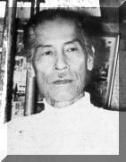
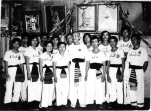

| | Sư-Trưởng TRƯƠNG-THANH-ÐĂNG | Thiền-Sư BỒ ÐỀ ÐẠT MA
Vua QUANG-TRUNG Nguyễn Huệ | |  | Sư-Trưởng TRƯƠNG-THANH-ÐĂNG
và Hệ Phái Bình-Ðịnh SA-LONG-CƯƠNG. | | Sư-Trưởng Trương-Thanh-Ðăng sinh năm 1895 tại Bình-Thuận, Phan-Thiết.Từ thuở nhỏ đã ham thích, say mê tập luyện võ thuật. Ngoại tổ của Ông vốn là Thầy dạy võ cho các môn sinh Cử Nhân Võ dưới triều các vua nhà Nguyễn.  Năm 14 tuổi ( 1909 ) Ông xin phép cha mẹ đi về miền đất võ Tây Sơn để tìm học những tinh hoa võ thuật của dân tộc, nền võ học cổ truyền hình thành từ những kinh nghiệm chiến đấu gian khổ, một mất một còn, đã từng giúp cho người dân Việt quật cường vùng châu thổ sông Hồng đánh Tống bình Chiêm, phá tan xiềng xích nô lệ ngoại bang, giử yên bờ cõi.
Về đến Bình Ðịnh, Ông Trương-Thanh-Ðăng đã tìm đến thụ giáo với những võ sư danh tiếng trong vùng như : Võ sư Trương Trạch ở Phù Mỹ, là một vị Cử Nhân Võ của triều đình lúc bấy giờ. Võ sư Hai Cụt ở làng Cẫm Thượng, Võ sư Ðinh Cát ở An Nhơn và nhiều võ sư khác ở hai làng An-Vinh và An-Thái. Vừa truyền dạy công phu sở học,vừa nghiên cứu, sắp xếp lại với tinh thần tổng hợp và sáng tạo một chương trình huấn luyện và thực hành đầy đủ, trọn ven từ sơ cấp đến cao cấp nền tảng cho một hệ phái từng bước được hình thành và xây dựng sau nầy, trong đó đặc biệt nổi bật là một bộ pháp căn bản thật đầy đủ và vững vàng cho môn sinh võ thuật cổ truyền Việt Nam, đó là phần " Bát Bộ Chân Quyền " rất đặc sắc và riêng biệt độc đáo của hệ phái Bình Ðịnh Sa Long Cương.  Ngoài thời gian được các bậc Thầy hướng dẩn, Ông còn tìm đến trao đổi và nghiên cứu thêm với một số bạn hữu trong vùng như Ðoàn-Phong, Hai Cửu, Mười Ðậu, Năm Tường ... Cùng với ước nguyện chân thành đối với di sản của tiền nhân bao đời và nhiệt tình học hỏi, kế thừa di sản võ thuật quý báu đó. Ông Trương Thanh Ðăng đã nhanh chóng tiếp thu, hấp thụ và thấm nhuần thật sâu sắc nền tảng tinh thần của Võ thuật cổ truyền Việt Nam qua hơn 15 năm miệt mài công phu khổ luyện tại miền đất võ Tây Sơn địa linh nhân kiệt nầy. Ngoài thời gian được các bậc Thầy hướng dẩn, Ông còn tìm đến trao đổi và nghiên cứu thêm với một số bạn hữu trong vùng như Ðoàn-Phong, Hai Cửu, Mười Ðậu, Năm Tường ... Cùng với ước nguyện chân thành đối với di sản của tiền nhân bao đời và nhiệt tình học hỏi, kế thừa di sản võ thuật quý báu đó. Ông Trương Thanh Ðăng đã nhanh chóng tiếp thu, hấp thụ và thấm nhuần thật sâu sắc nền tảng tinh thần của Võ thuật cổ truyền Việt Nam qua hơn 15 năm miệt mài công phu khổ luyện tại miền đất võ Tây Sơn địa linh nhân kiệt nầy.
Trong thời gian nầy, không hạn chế hiểu biết của mình trong khuôn khổ võ thuật cổ truyền Việt Nam tại Bình Ðịnh. Ông cũng đã dành nhiều thời giờ học hỏi thêm với Võ sư Vĩnh Phúc, là một nhân vật nổi tiếng giỏi võ Thiếu Lâm vào thời đó. Và khi trở về quê nhà tại Phan Thiết, Ông đã đến thọ giáo với hai người Thầy người Trung Hoa gốc gác ở các tỉnh Phước Kiến và Hẹ (Trung Quốc), về các môn Ám khí, Cữu liên Hoàn và đặc biệt là bài Tứ môn Chương quyền pháp, một trong những kỹ thuật cao cấp của môn phái Thiếu lâm tự.
Từ năm 1925, Ông Trương thanh Ðăng bắt đầu thu nhận học trò. Vào thời gian nầy đất nước đang ở trong giai đoạn Pháp thuộc, tất cả các sinh hoạt võ thuật đều bị cấm đoán, kiểm soát chặt chẽ và triệt để. Do đó, mọi việc học hỏi và tập luyện của Ông đều ở trong vòng kín đáo, len lút, không để cho người chung quanh nhìn thấy hoặc biết được. Thường chỉ có một thầy một trò ở phía sau vườn, bên cạnh rừng hoặc vào ban đêm có trăng sáng... hoặc có khi vào ban ngày, trong lúc làm việc như học côn, roi với cây thước kẽ của học trò...
 Chính quyền của Thực dân Pháp thời đó vẫn luôn ngăn cấm việc luyện tập, truyền bá và phát triển võ thuật nhất là võ thuật cổ truyền Việt Nam, vì e ngại rằng các sinh hoạt đó sẽ là mầm móng cho những hoạt động của các tổ chức yêu nước, chống phá chính quyền Thực dân. Chính quyền của Thực dân Pháp thời đó vẫn luôn ngăn cấm việc luyện tập, truyền bá và phát triển võ thuật nhất là võ thuật cổ truyền Việt Nam, vì e ngại rằng các sinh hoạt đó sẽ là mầm móng cho những hoạt động của các tổ chức yêu nước, chống phá chính quyền Thực dân.
Sau năm (5) năm sinh hoạt tại Phan-Thiết, năm 1930 Ông phải di chuyển vào Sài-Gòn mới mong có cơ hội phát triển và phổ biến rộng rãi hơn những gì Ông đã dày công tìm hiểu, khổ luyện và thực chứng những hay đẹp của tiền nhân bao đời và nay mong muốn lưu truyền di sản truyền thống quý báu của dân tộc Việt-Nam cho những thế hệ mai sau. Tại Sài-Gòn, tuy khả năng và hiểu biết sâu sắc, rộng rãi như thế nhưng Ông vẫn chỉ khiêm tốn mở lớp dạy tại nhà riêng mà thôi, ai biết hay thì tìm đến học chứ không chủ tâm quảng cáo, giới thiệu.
Năm 1964 vào độ tuổi thất tuần (70 tuổi), Ông Trương thanh Ðăng mới chính thức giới thiệu võ đường của ông tại Sài-Gòn với tên gọi là "Võ đường Bình-Ðịnh Sa Long Cương", chuyên truyền dạy Võ thuật cổ truyền Việt Nam và Thiếu-Lâm Trung Quốc.
Sa-Long-Cương là biệt hiệu của Sư trưởng Trương Thanh Ðăng từ khi còn trẻ, có ý nghĩa là "Rồng nằm đồi cát". Những đồi cát mênh mông trãi dài theo bờ biển là hình ảnh tượng trưng đặc biệt cho tỉnh Phan-Thiết ( Bình-Thuận ), sinh ra và lớn lên tại mãnh đất nhỏ bé nầy, luôn ghi nhớ mình là con Rồng cháu Tiên, ông mong mõi kế thừa và gìn giử những di sản cao quý của dân tộc cho con cháu mai sau.
Nội dung sinh hoạt của Võ đường được quy định rất nghiêm nhặt với tinh thần: "Tiên học lể hậu học võ". Người môn sinh của võ đường luôn được nhắc nhở: | | "Học võ nhưng phải biết lấy lể làm đầu trong mọi việc, hòa nhã, khiêm tốn trong mọi cư xử ở đời chứ đừng bao giờ ỷ sức, cậy tài, ngông cuồng, hống hách." | | |  Võ thuật cổ truyền Việt Nam là tinh hoa văn hóa dân tộc, là những kinh-nghiệm chiến đấu bằng xương máu của tổ tiên, trãi dài hơn 4 ngàn năm dựng nước và giử nước. Học hỏi và tập luyện võ- thuật cổ truyền Việt-Nam, trước là kế thừa và gìn giử tinh hoa của dân- tộc, sau là phát triển sức khỏe cá nhân và hộ thân khi cần thiết trong cuộc sống xã hội. Võ thuật cổ truyền Việt Nam là tinh hoa văn hóa dân tộc, là những kinh-nghiệm chiến đấu bằng xương máu của tổ tiên, trãi dài hơn 4 ngàn năm dựng nước và giử nước. Học hỏi và tập luyện võ- thuật cổ truyền Việt-Nam, trước là kế thừa và gìn giử tinh hoa của dân- tộc, sau là phát triển sức khỏe cá nhân và hộ thân khi cần thiết trong cuộc sống xã hội.
Sư Trưởng Trương-Thanh-Ðăng nghiêm cấm các môn sinh không được thách đấu và nhận lời thách đấu của bất cứ ai và trong bất cứ trường hợp nào. Do tâm huyết chân thành và bản lảnh đích thực từ công phu khổ luyện của vị Sư Trưởng, chỉ trong một thời gian ngắn Võ đường Bình Ðịnh Sa long Cương đã có một chổ đứng đường hoàng, chững chạc, trong làng võ thuật VIệt Nam.
Và 21 năm sau ngày hoạt động chính thức, thừa kế và truyền bá di sản võ thuật truyền thống bất khuất của dân tộc, Vị Chưởng môn sáng lập Hệ phái Bình-Ðịnh Sa-Long-Cương đã qua đời vào ngày 17 tháng 9 năm 1985 ( tức ngày mùng 3 tháng 8 năm Ất Sữu ) hưởng thọ 91 tuổi, để lại bao thương tiếc cho gia-đình, môn sinh và thân hữu trong làng võ thuật.
Trưởng Nam của Sư Trưởng là Sư Phó Trương bá Ðương cùng với Võ Sư Trưởng Tràng Lê văn Vân, tiếp nối công việc điều hành và phát triển môn phái. Hiện nay, hệ phái Bình-Ðịnh Sa-Long-Cương đã được phát triển tại nhiều nơi với các chi nhánh ở trong và ngoài nước như : Vũng Tàu, Biên Hòa ... và tại các nước Pháp, Gia nã Ðại, Hoa Kỳ và Ý đại Lợi ...
Và cho dù sinh hoạt ở bất cứ nơi nào, bản sắc dân tộc Việt Nam vẫn luôn tiềm tàng trong từng đường quyền, ngọn Roi, mũi kiếm, đường đao ... bản lãnh đích thực của võ phái vẫn luôn luôn được thể hiện trọn vẹn.
| |